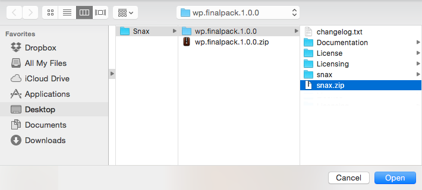
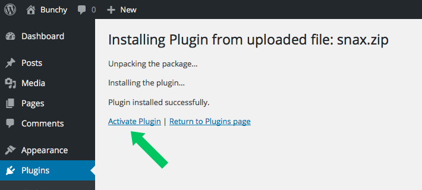
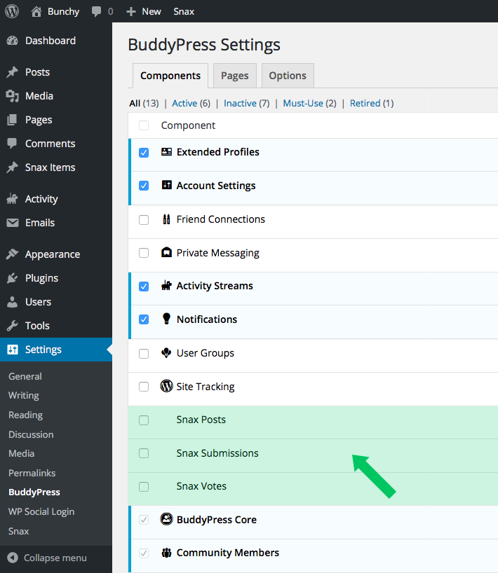
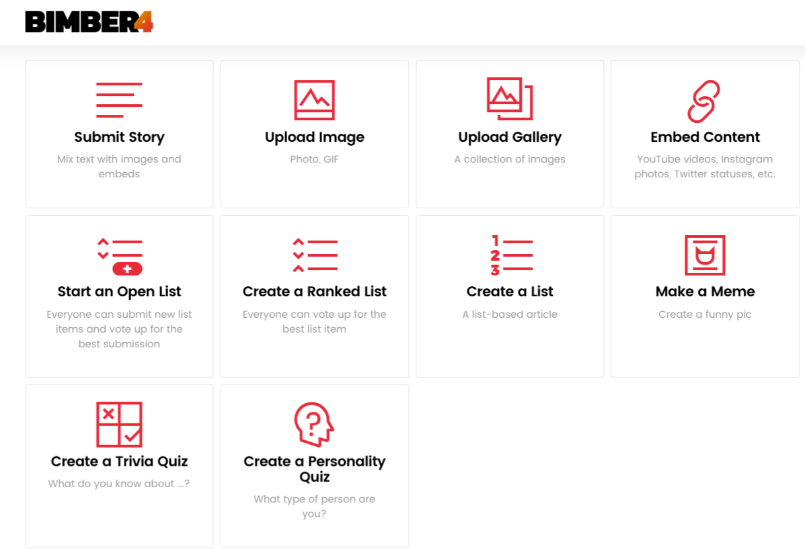
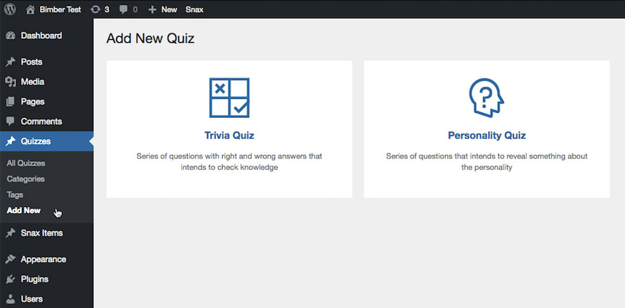
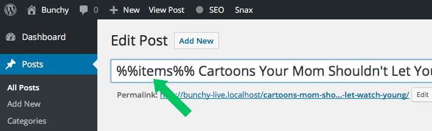

Getting started
First of all, we would like to thank you for purchasing our Plugin. If you have any questions that are beyond the scope of this help, please feel free to email us via our user page contact form here.
We'd be glad to help you if you have any questions related to this plugin. No guarantees, but we'll do our best to assist. If you have a more general question relating to our products you might consider visiting our support forum.
Quick-start guide
For the impatient, here’s how to get the plugin up and running in a second.
- Go to the WP admin › Plugins › Add New, upload snax.zip and activate it. Need more details?
- Under the WP admin › Settings › Snax › Pages, click the View button next to the Frontend Submission page.
- Choose what kind of story you want to create (eg. Create open list).
- Upload an image or paste embed URL, fill in the Title and accept the Terms and Conditions.
- Click the Publish button and voilà, you've just submitted your first post!
Installation
Please follow these simple steps to install the plugin and import the demo content in just few clicks.
- Go to the WP admin panel › Plugins
- Click the Add New button

- Click the Upload Plugin button
- Find the snax.zip file inside the package you've downloaded from CodeCanyon
- Upload it

- After few seconds the plugin will be installed.
- Click the Activate Plugin button

Basic workflow
Post vs. Submission
Snax workflow is based on two main concepts, Posts and Submissions. Before further reading, you should first get to know what they are and what's the main difference between them.
Posts - you can think of them as standard Wordpres posts. Besides plugin related options, they work in pretty much the same way.
Example: User creates new "Open List". Other users may contribute to it.
Submissions - children of a post. They are similar, in behaviour, to posts but cannot exist alone.
Example: User adds new "Submission" to an existing open list.
Add new post
Here's how the standard submission process, from post creation to final approval, works:
- User clicks the "+ Create" button.
- Choose one of available formats (e.g. Create open list).
- Upload images or add embeds.
- Fill required fields and submit a post for a review.
- Now, the submitted post is waiting for your approval in the review queue.
- At this stage, only you (as administrator) and post author (as owner) have access to it.
- Until you publish this post, it won't be publicly accessible for all other visitors.
- To allow direct publishing, please read the Users permissions section.
Add new submission
Here are steps involved in new contribution process:
- User visits one of the existing open lists.
- After all items, there's a new item form.
- User uploads an image or adds an embed.
- Fill required fields and submit an item for a review.
- Now, the submitted item is waiting for your approval in the review queue.
- At this stage, only you (as administrator) and item author (as owner) have access to this item.
- Until you publish this item, it won't be publicly accessible for all other visitors.
- To allow direct publishing, please read the Users permissions section.
Profile
Use the BuddyPress plugin
When you think about users, relations between them and entire community they are part of, most likely the first thing that come up to your mind is the BuddyPress plugin.
BuddyPress is the most popular Wordpress plugin for online communities, so the choice tends to be obvious.
What Snax has to do with BuddyPress?
We always try to give you possibility to best adapt our products to your site. The more compatible the product is with other well known Wordpress plugins the more options to combine them you have. If so, what can be more capable to adjust that the plugin with 200K+ community and almost 100 of plugins wrote just for it!
Snax is a way to get your community more involved. BuddyPress is a best choice for communities. Both create perfect combination. And that's why the Snax is fully integrated with the BuddyPress.
Snax + BuddyPress
Using BuddyPress as your Snax community partner, your users can use BuddyPress profiles to:
- manage their posts
- check status of posts that are still under review process
- quickly access all submissions (items added to someone else open list)
- check pending/rejected submissions
- see all upvotes and downvotes
- be notified about others actions (e.g. when your post was voted)
- see all their activities (e.g. when you add a new item to someone else list)
Can I use Snax without BuddyPress?
Using BuddyPress it's not a requirement. You have still, as site owner, full access to all posts/submissions added by users using traditional Wordpress admin area. The only difference is that your users don't have profiles so until you accept their items, they can't see them, check their status etc.
Setup the BuddyPress plugin
Start with BuddyPress
If you are not already familar with the BuddyPress plugin, you probalby want to learn all about it before you start playing with the Snax. There are a lot of useful guides on the web but we recommend The Complete Guide to BuddyPress for WordPress.
Start with Snax
To start using Snax and BuddyPress you don't need to do any special configuration steps. Just install BuddyPress and Snax will do the rest. The order of plugin installation doesn't matter. You can have BuddyPress already installed or install it after Snax.
Turn on/off Snax components
By default, Snax enables all its components (Posts, Submissions, Votes). Of course it always depends on you, what components you want to use. To change default configuration, please do as follows:
- Go to the WP admin › Settings › BuddyPress.
- In the Components tab, you will find all Snax components (name with the "Snax" prefix).
- For example, if you don't like to use the Snax Submissions component, just uncheck it.

Do I need to use all other BuddyPress components?
No, you don't need to use any additional components delivered with the BuddyPress. BuddyPress requires two components: BuddyPress Core and Comunnity Members and that's all. All others are optional.
Social Login
Use the Wordpress Social Login plugin
With the WordPress Social Login plugin, you give your visitors an ability to login with social networks like Facebook, Twitter and more. No more old fashioned registration form and confirmation emails! No one wants to create a new account just to check what your site has to offer. Don't make this mistake and don't try to change users habits.
Snax + WP Social Login
Using WP Social Login as your Snax login/register service, your users DON'T NEED TO:
- create a new account
- fill out registration forms
- wait for confirmation emails
- remember another usernames and passwords
Can I use Snax without WP Social Login?
Yes, of course you can use the Snax without any 3rd party login plugins. But believe us, you don't want to do that. Nowadays, for most users creation of a new account seems hard to overcome. If user needs to register when he only wants to check how a site works, it will probaly quickly leave it. And that's the last thing you want.
Setup the Wordpress Social Login plugin
Social Login requires a little bit of effort on your part to have it up and running in your website. As a matter of control and security, Google, Facebook, Twitter, etc., will require you to apply for an application first. Generally speaking, registering a new application is free and only takes a few minutes.
Social Networks Setup
To configure your preferred login channels, please do as follows:
- Go to the WP admin › Settings › General and check the Anyone can register box to allow creating new user accounts.
- Go to the WP admin › Settings › WP Social Login.
- Choose the Networks tab, and follow Social Networks Setup guide to set them up.
- If you need to add more providers, use the sidebar on the right.
- Now to load big social buttons, go to the WP admin › Settings › WP Social Login › Widget and choose the option None, display providers names instead of icons for the Social Icon Set..
For more information about plugin configuration and more advanced options, please refer to the WordPress Social Login Documentation.
Quizzes
Set up quizzes
There are two types of quizzes:
- frontend - behave like other Snax formats
- backend - behave like any custom post type
How to enable frontend quizzes?
As with other Snax formats, you need to activate quizzes (both Trivia and Personality) in WP admin panel › Settings › Snax › General › Active formats before your users will be able to use them.
How to enable backend quizzes?
You don't need to activate backend quizzes. When Snax is activated the quizzes are accessible via WP admin panel › Quizzes.
Create a quiz on frontend
Frontend quiz can be created by a user with "Snax Author" role assigned. To create a new quiz please go to the Frontend Submission page and choose one of available quiz types.

Create a quiz on backend
Backend quiz can be created by site's administrator (or other roles with edit posts capability). To create a new quiz please go to the WP Admin panel › Quizzes › Add new and choose one of available types.

Share quiz to Facebook to unlock results
You can spread your quizzes more quickly across the web if your users will share them on the Facebook. Snax gives you an option to force users to do that, if they want to see their results.
To force users to share quiz to Facebook before seeing the results, please do as follows:
- Go to the WP Admin panel › Quizzes and choose a quiz for which you want to enable that option
- On a quiz edition panel, choose the Settings tab
- Set the option User have to share the quiz to see results? to "yes"
- Now, you need to set the Facebook App Id to allow sharing
- Go to the WP admin panel › Settings › Snax
- Choose the General tab
- Set the Facebook App Id option (use the Register and Configure an App guide for help)
Configuration
General
All Snax configuration options are located under WP admin panel › Settings › Snax.
They are divided into separate sections:
- General configuration.
- Lists related settings.
- Pages setup.
- Demo mode. Useful for quick start and testing purposes.
Single options
Options specific for a single Post (open list, gallery etc) or Submission can be adjusted directly on its edit page.
Under the WP content edition you will always find, if applicable, metabox called Snax.
Post Formats
Snax is delivered with the following post formats:
- Open List. For images and/or embeds. Users can contribute by submitting new items. Ranking (order) is based on votes.
- Ranked List. For images and/or embeds. Users can't contribute. Ranking (order) is based on votes.
- Classic List. For images and/or embeds. Users can't contribute. Ranking (order) is set by list author.
- Story. Best for text stories, similar to WordPress posts.
- Gallery. Best for photo stories.
- Image. For a single image.
- Embed. For a single YouTube, Twitter, Instagram content.
- Meme. For a funny image with top and bottom texts.
- Trivia Quiz. For quick yes/no quiz.
- Personality. For a test to know who/what are you similar to.
Deactivating formats
There's no need to use all available formats. If your site is focused just on funny images and you don't want to embed any Youtube video there, you can simply disable the Embed format. To disable unwanted format, please follow these simple steps:
- Go to the WP admin panel › Snax.
- Choose the General section.
- Uncheck the box right beside that format.
- Save changes.
Item Forms
Item forms are types of content users can add to existing lists. By default, these are New Image and New Embed forms. If you want to have a list consists of only images, you can disable the Embed form and that's all.
Global Setup
To configure forms globally, please do as follows:
- Go to the WP admin panel › Snax.
- Switch to the Lists tab.
- Uncheck all forms you don't want to use.
- Save changes.
Single List Setup
If you want to override global setup, just for one or few lists, please follow these steps:
- Go to the WP admin panel › Posts.
- Find your list (using filters and search form).
- Go to its edit page.
- In the Snax metabox, check the "Change Default Forms" field.
- Uncheck all forms you don't want to use.
- Save changes.
Pages
Snax requires only one custom page to work. It's the Frontend Submission page. It's a start point to create any new post (Open List, Embed etc.).
Other pages are optional. These are:
- Terms and Conditions - frontend submission rules and privacy policy.
- Report - page on which you can put some contact form to get feedback from users about all kind of abuses.
Setup
The Frontend Submission page is created and assigned during plugin installation. Only optional pages have to be created manually. Please follow these simple steps to set them up:
- Go to the WP admin panel › Pages › Add New and create a new page (e.g. Report).
- Fill its content (add a contact form, describe rules to follow etc).
- Publish page.
- Now, go to the WP admin panel › Snax.
- Switch to the Pages section.
- Assign your newly created page to the relevant field.
- Save changes.
Post Titles
Snax adds post format related information to Wordpress post titles.
For the Open List post format it will be (example below):
- already submitted items count
- list status (open | closed for submission)
Can You Get Through These 20+ Sexy Photos Without Saying WOW (Open for submission)?
For the Gallery post format it will be (example below):
- number of gallery items
Why my last holidays turned into a trip of my life (10 photos)
Setup
To enable/disable post titles parts, please follow these steps:
- Go to the WP admin panel › Snax.
- Choose the General section.
- Check/uncheck the Show items count in title to show/hide items count.
- Choose the Lists section.
- Check/uncheck the Show list status in title to show/hide list status.
- Save changes.
To change items count position from the beginning of a post, please do as follows:
- Go to the WP admin panel › Posts.
- Choose one of your list (or gallery) posts.
- To a post title, add the
%%items%%placeholder in the place you want to show counter.

- Update post.
- Snax will replace that placeholder with a real value.
Voting
Voting system allows users to upvote/downvote every post that was created using Snax uploader (List, Gallery, Story etc).
Disable voting
To disable voting globally, please do as follows:
- Go to the WP admin panel › Snax.
- Switch to the Voting section.
- Uncheck the Voting enabled? option.
- Save changes.
Allow users to vote on other post types
To allow users to vote on a post that is not any of Snax formats, please do as follows:
- Go to the WP admin panel › Snax.
- Switch to the Voting section.
- Make sure that the Voting enabled? option is checked.
- Check all post types that can be voted
- Save changes.
Fake votes
New posts start with votes counter set to 0. It doesn't look good and it doesn't attract your visitors. The "Fake votes" feature will help you solve that problem.
Use auto-calculation
Automatic votes calculation gets into account post publish date. At first votes counter won't be equal to value you set as Fake vote count base (see below) but will be only 10% of it. The counter will reach the final value after 30 days which makes it look more natural during post lifetime. To enable auto-calculation, please do as follows:
- Go to the WP admin panel › Snax.
- Switch to the Voting section.
- Make sure that the Voting enabled? option is checked.
- Set the Fake vote count base value. Be aware that
- Save changes.
Set exact votes value per post
If you prefer to set votes counter to an exact value, regardless of the "Fake vote count base" value, please do as follows:
- Go to the WP admin panel › Posts.
- Open your target post to edit.
- Scroll down to the Fake votes metabox.
- Set the Fake vote count value.
- Update post.
Demo Mode
The demo mode is the fastest way to start playing with frontend submission. Thanks to it, you don't need to upload new images/embeds all the time you want to test submission process.
Setup
To enable demo mode, please do as follows:
- Go to the WP admin panel › Snax.
- Switch to the Demo section.
- Check the Demo mode enabled? box.
- From the Media Library choose (or upload new ones) images that will be used as your demo images.
- Fill in embed URL and choose post image if you want to test embeds.
- Now, when you create a new post, demo data will show up under the upload image/embeb form.
- Save changes.
Administration
Review new posts and submissions
When user creates a new post/submission, new item is not published immediately. Lack of verification it is not a good idea and most likely you want to know what is added to your site. That's why before any new item will be accessible for your visitors, it's waiting for moderation in the review queue.
How to approve new post?
To change post status from pending (in the review queue) to published (visible on site), please follow these simple steps:
- Go to the WP admin panel › Posts.
- Click the Pending tab.
- Choose the Snax: All formats option and click Filter.
- From list of pending posts, choose one and go to its edit page.
- Verify it and if all is fine, click the Publish button
How to approve new submission?
To change submission status from pending to published, please follow these simple steps:
- Go to the WP admin panel › Snax Items.
- Click the Pending tab.
- From filtered list of pending submissions, choose one and go to its edit page.
- Verify it and if all is fine, click the Publish button
How to skip verification step?
To allow user to create and publish new post/submission immediately, please do as follows:
- Go to the WP admin panel › Settings › Snax.
- Click the General tab.
- Set the Skip verification option to "yes".
How will I know when new post/item is submitted?
When a user create a new post or contribute to an existing list, you will get an mail about that action.
Mail notifications are sent to site's administrator and if you don't want to receive them, you can disable them via WP admin panel › Settings › Snax › General › Send mail to admin when new post/item was added? option.
Users permissions
Snax permissions are based on the WordPress roles and capabilities system. Most of necessary configuration is done during plugin activation so, in most cases, you don't need to do anything more.
Roles and capabilities
Snax provides only one Snax Author (snax_author) role and the following capabilites:
- snax_upload_files - allows users to upload files
- snax_add_posts - allows users to create new posts
- snax_add_items - allows users to create new submissions
- snax_delete_items - allows users to delete their own submissions
- snax_vote_posts - allows users to vote on posts
- snax_vote_items - allow users to vote on submissions
Basic configuration
By default, Wordpress assigns its default role (the Subsciber role) to all new users registered on your site. If you don't change that setting, Snax during activation process will change it to the Snax Author role. From now, all new users will be able to use Snax. For old users, if you have any, you will need to assign the Snax Author role to them manually (or using some 3rd party plugin).
Generally speaking, all your user needs to start using Snax is the Snax Author role assigned to him.
How to change default user role (for all new users)?
To change the role that will be assigned to all new users registered on your site, please follow these simple steps:
- Go to the WP admin panel › Settings › General
- Select the Snax Author option in the New User Default Role field.
- Save changes.
How to assign new role to existing user?
To assign new role, and keep all current user roles assigned, please do as follows:
- Install and activate the Members plugin.
- Go to the WP admin panel › Users
- Choose a user and click it.
- Scroll down to the Roles section.
- Check the box right next to the role you want to add (Snax Author role).
- Click the Update User button
Advanced permissions management
If the basic configuration is not sufficent for your site, e.g. becuase you have already defined other users permissions, you can use the Members plugin to add necessary capabilities to existing roles.
Let's say your users (old and new) require to have the SPECIAL_ROLE role and you can't change this. It's not a problem, you can assign Snax capabilites to any role you want. To do this, using the Members plugin, please follow these steps:
- Install and activate the Members plugin.
- Go to the WP admin panel › Users › Roles
- Click your SPECIAL_ROLE role (or any other role you want to assign Snax capabilites to).
- Check the box (in the "Grant" column) right beside capabilites with the snax_ prefix (full list above).
- Click the Update button
Miscellaneous
Sources and Credits
JavaScripts
- jQuery - JavaScript Framework
- Timeago - convert date into fuzzy timestamps
- Magnific Popup - responsive lightbox
- Tag-it! - tag editing widget
Fonts
- Google Fonts - free, open source fonts
- Font Awesome - the iconic font and CSS toolkit
JavaScript files
The main power behind this plugin is the famous javascript framework jQuery.
The plugin uses:
- front.js - plugin specific functions and initializations (frontend side)
- front-submission.js - user submission (new post) specific functions (frontend side)
- add-to-list.js - user submission (contribution) specific functions (frontend side)
- admin.js - plugin specific functions and initializations (admin side)
All used 3rd party scripts are listed on the Sources and Credits page.
CSS files
Reset Styles
The first rules in main.css file are generic reset rules. Many browser interpret the default behavior of html elements differently. By using a general reset styles, we can work round this.
General Styles
The main css file main.css is separated into sections:
-
Settings
- Global
-
Tools
- Functions
- Mixins
-
Generic
- Reset
-
Elements
- Default
- Forms
-
Objects
- Grid
- Fluid wrapper
- Components
If you would like to edit a specific section of the site, simply find the appropriate label in the CSS file, and then scroll down until you find the appropriate style that needs to be edited. Sections are marked as follows:
/** * 1 . SAMPLE SECTION NAME */
Folder Structure
After unzipping the file downloaded from the CodeCanyon you'll see the following folder structure:
- snax - plugin files - in case you want to upload the plugin through the FTP
- snax.zip - zipped plugin files - in case you want to upload the plugin through the WordPress admin
- changelog.txt - releases history
- Documentation - an entry point to the online documentation. Online version it's always up to date.
- License - licensing files
- Licensing - licensing files
Custom Widgets
The Plugin comes with some custom widgets ready to use. All custom widgets names start with the Snax prefix.
All available widgets can be found in the WP Admin › Appearance › Widgets.
FAQ
How to update plugin?
Automatic updates
To use automatic updates you need the Envato Market plugin. You can do that now via WordPress Admin › Appearance › Install Plugins or WordPress Admin › Plugins › Install Plugins panel.
After installing, go to the WordPress Admin › Envato Market and enter your token.
If you don't have it, you can generate new one by clicking the generate a personal token link in the Global OAuth Personal Token section.
Manual updates
If, for some reasons, you can't use automatic updates, you can always use default way to update the plugin. When new update will be released, the CodeCanyon will notify you about that so you can download new package and install it manually, via WP admin panel › Plugins › Add new.
What's the difference between Post and Submission?
Do I need the BuddyPress plugin?
Do I need the Wordpress Social Login plugin?
How to change default user role (for all new users)?
How to assign new role to existing user?
Do I need to use all other BuddyPress components?
Troubleshooting
Quiz actions don't work
Problem
Quizzes core is built using the Backbone JS framework. To work, it uses the PUT and DELETE request method for HTTP requests. If you encounter problem with adding/removing your quiz questions/answers/results, you have probably blocked the DELETE and/or PUT methods on your server.
Solution
The easiest way to allow Backbone working properly, is to insert the below condition into the .htaccess file on your server. If this not an option on your server, please contact with your server provider to check other possible solutions.